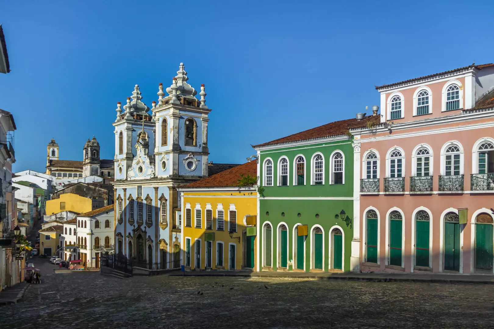

A Bahia é um estado localizado na região Nordeste do Brasil, conhecido por sua cultura vibrante, música animada e festas tradicionais, como o Carnaval de Salvador. A capital, Salvador, é uma cidade histórica cheia de charme, com um centro colonial bem preservado, praias lindas e uma forte influência africana na sua cultura, culinária e religiões. A Bahia também é famosa por suas praias paradisíacas, como as de Porto Seguro, Morro de São Paulo e Itacaré, além de ter uma natureza exuberante com rios, cachoeiras e áreas de Mata Atlântica. É um lugar cheio de história, cores, sabores e alegria, perfeito para quem gosta de cultura, natureza e festas animadas!
